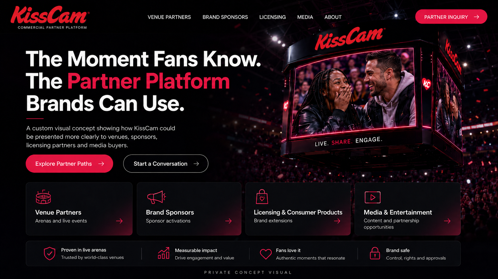
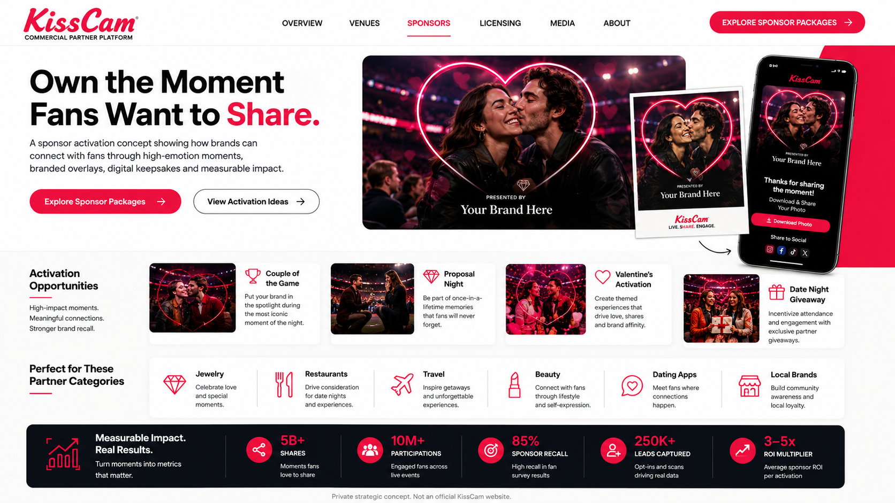
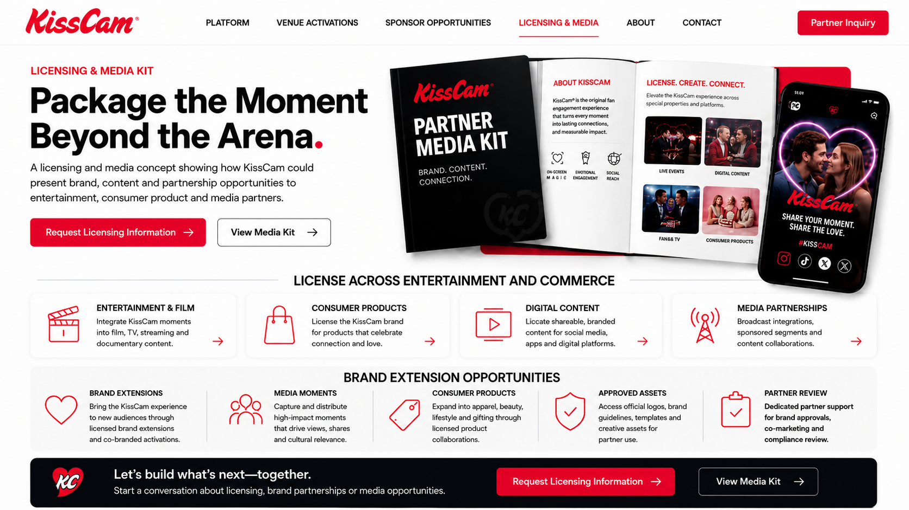
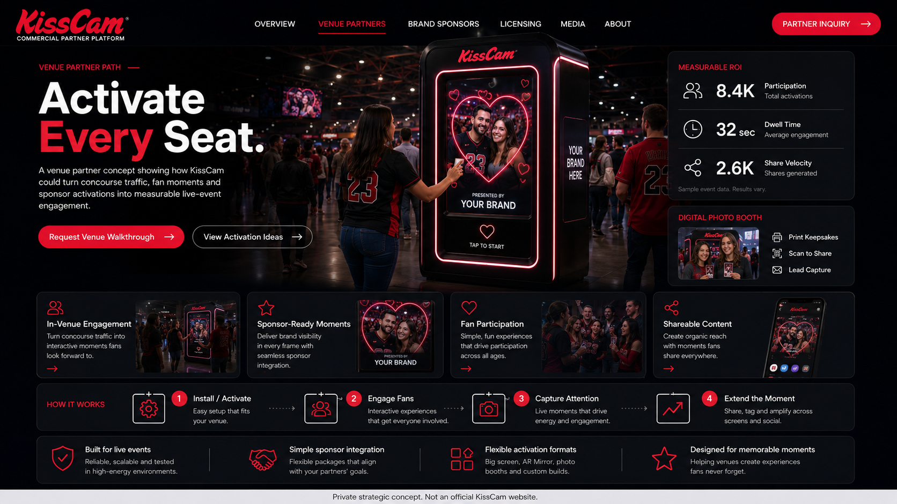

After our conversation, I kept thinking about KissCam as more than a familiar arena moment. My read is simple: the recognition is there. The commercial path could be clearer. I built this to show how Rogelstad Media could help make the offer easier for venues, sponsors, licensing partners and media partners to understand and act on.

From the outside, I see a brand with real recognition, but a commercial story that could be easier for buyers to follow.
I am not approaching this as a website polish project. I am looking at it as a commercial packaging and growth opportunity.
From what I observed publicly, KissCam already has real commercial activity behind it. What I think is missing is a way to communicate that proof clearly to new partners before the first conversation even starts.
A few well-resourced companies are actively selling fan engagement technology to venues and sponsors right now. Most of them are built around infrastructure and data. What KissCam has is a moment people already know by name — before the platform is even introduced. That is a different kind of commercial opening, and it is worth framing clearly.
These are not design themes. Each concept shows how KissCam could be presented to a different commercial buyer with a clearer purpose and a clearer next step.



Dana, I built this because I enjoyed our conversation and because I think there may be a real opportunity to make KissCam easier to package, pitch and grow. I am not asking you to make a big decision from a webpage.
If this feels useful, I'd enjoy sitting down over coffee for 30 minutes, comparing notes, and hearing where I got it right or wrong.